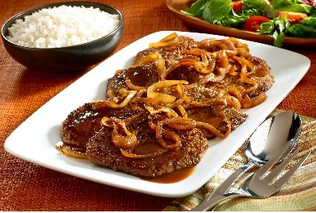

Bistec Encebollado
Una receta clásica de bistec, fácil de seguir. Usamos una mantequilla de hierbas rápida para potenciar el sabor.
Ingredientes:
- 2 Bistecs de res (200g c/u)
- 1 Cebolla grande en rodajas
- 2 Dientes de ajo picados
- 2 Cucharadas de aceite de oliva
- 1 Cucharada de salsa de soya (opcional)
- Sal (al gusto)
- Pimienta (al gusto)
Preparación
- Preparar la carne
- Lavar y secar bistecs
- Sazonar con sal, pimienta y ajo picado
- Cocinar la cebolla
- En una sarten, calentar el aceite de oliva
- Agregar la cebolla en rodajas y sofreir hasta que quede transparente y dorada
- Sellar la carne
- Retirar la cebolla y reservar
- En la misma sarten, colocar los bistecs y cocinarlos 3-4 min por cada lado
- Unir todo
- Agregar nuevamente la cebolla al sarten
- Si deseas, añadir salsa de soya
- Cocinar durante 2 min
- Servir en caliente
- Acompañar con arroz, ensalada o papas fritas